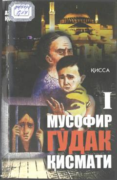

MGMusofirchilikda qolgan ona va uning kichik o'g'li boshidan kechirgan og'ir sinovlar haqida qissa.
Ushbu qissa bankdagi muammolari sababli o'g'li bilan Turkiyaga ishlash uchun ketgan Laylo ismli ayolning og'ir taqdiri haqida hikoya qiladi. Chet elda musofirchilikda qolgan ona va uning uch yoshli o'g'li boshiga tushgan sinovlar real voqealar asosida tasvirlangan.